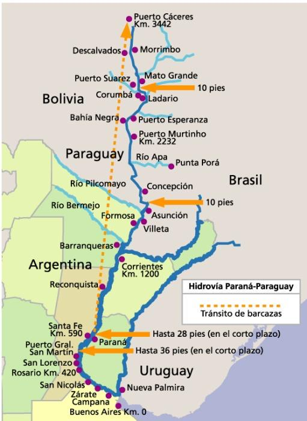

Hidrovías en América del Sur
¿Qué es una hidrovía?
Una hidrovía es un sistema de transporte fluvial compuesto por ríos navegables.
En América del Sur, la más importante es la Hidrovía Paraguay-Paraná.
Beneficios del uso de hidrovías
- Disminuyen los costos de transporte.
- Reducen el impacto ambiental.
- Fomentan la integración regional.
Países que participan
- Argentina
- Brasil
- Paraguay
- Bolivia
- Uruguay
Imagen de la hidrovía

Para más información, visitá
Wikipedia.
Video explicativo